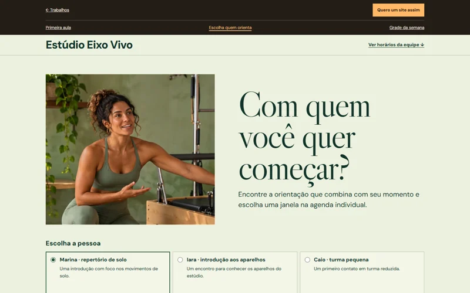
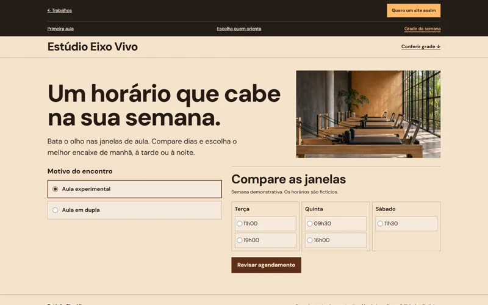

Estúdio Eixo Vivo
Três maneiras de organizar uma visita · Pilates
Primeira aula
Conheça a sala, o aparelho e a forma de experimentar antes de planejar sua primeira aula.

Escolha quem orienta
Encontre a orientação que combina com seu momento e escolha uma janela na agenda individual.

Grade da semana
Bata o olho nas janelas de aula. Compare dias e escolha o melhor encaixe de manhã, à tarde ou à noite.